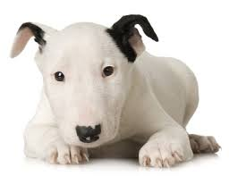

Догляд за зубами
Молочні зуби щенят змінюються приблизно до 6 - 7 місяців. Зуби щенят потрібно оглядати щотижня, щоб якомога раніше виявити зміну їхнього кольору: жовтуватий зубний камінь часто утворюється в собак, які не люблять гризти і жувати.
Собаки звичайно дозволяють своїм господарям чистити зуби, хоча частої необхідності в цьому немає: при правильному харчуванні, годівлі грубими кормами (хрящами, цукровими костями і т.п.) зуби очищаються самі.
Якщо ж ви виявите на зубах жовтуватий зубний камінь, постарайтеся видалити його, він нерідко є причиною неприємного запаху з рота. Для цього накрутіть на паличку ватний тампон і, змочивши водою, занурте його у звичайний зубний порошок, потім протріть зуби. Так ви зможете зняти ще не затверділий наліт. Для боротьби з більш міцним зубним каменем рекомендуємо регулярно додавати в корм прісний томатний сік: при цьому зубний камінь зменшується, стає тендітним і його легко видалити. Можна спробувати позбутися від зубного каменю протираючи зуби скоринкою від лимона.
Увага! Нерідко при чищенні зубів ушкоджується емаль, після чого зуби в собаки почнуть руйнуватися. Тому краще не перестаратися, спробувати легенько почистити, а не вдасться - звернутися по допомогу до гарного фахівця.
У деяких порід часто зустрічаються неприємності із зубами (наприклад, у карликових пуделів). У них часто утворюються зубні камені, карієс і пародонтоз.
Буває, що під час зміни зубів молочний зуб затримується в яснах, в той час як постійний уже прорізається. Обов'язково видаліть молочний зуб; він може сам не випасти, тоді на місці одного зуба будуть стирчати два. Або старий зуб із запізненням все-таки буде виштовхуватись новим, але при цьому новий виросте кривим. І те й інше ставить під сумнів участь собаки у виставках.